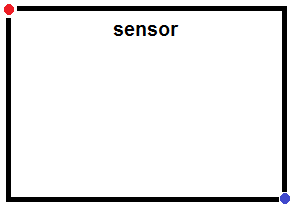
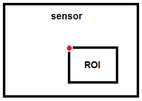

cameraboard
Connection to camera board on Raspberry Pi hardware
Add-On Required: This feature requires the MATLAB Support Package for Raspberry Pi Hardware add-on.
Description
This object represents a connection from the MATLAB® software to the camera board on the Raspberry Pi® hardware. To interact with the camera board, use this object with the functions listed in Object Functions.
Creation
Description
mycamera = cameraboard(mypi)mycamera, from the MATLAB software to a camera board on the Raspberry Pi hardware.
mycamera = cameraboard(mypi,Name,Value)
Input Arguments
Connection to the Raspberry Pi hardware board, specified as a raspi object.
Name-Value Arguments
Specify optional pairs of arguments as
Name1=Value1,...,NameN=ValueN, where Name is
the argument name and Value is the corresponding value.
Name-value arguments must appear after other arguments, but the order of the
pairs does not matter.
Before R2021a, use commas to separate each name and value, and enclose
Name in quotes.
Example: mycamera =
cameraboard(mypi,'Resolution','1280x720')
The height and width of the image in pixels that the camera captures, specified as character vector.
Example: '1024x768'
Data Types: char
The quality of the image that the camera captures, specified as a scalar between
1 and 100 (low to high).
The value of this parameter is inversely related to the amount of compression
the camera performs upon the JPEG images. A value of 1 applies
maximum compression. A value of 100 applies minimal
compression.
Example: 10
Data Types: double
The orientation of the image that the camera captures.
For Buster OS, specify one of these values: 0
|
90
|
180
|
270.
For Bullseye and Bookworm OS, specify one of these values: 0
|
180.
Example: 180
Data Types: double
Reverse the left and right orientation of the image that the camera captures.
Example: 1
Data Types: scalar
Reverse the top and bottom orientation of the image that the camera captures.
Example: 1
Data Types: scalar
This property is read-only.
The number of frames per second (fps) that the camera captures, specified as a
scalar between 2 and 90.
Example: 30
Data Types: double
The brightness level to adjust for the amount of lighting on the image that the
camera captures, specified as a scalar between 0 and
100 (low to high).
Example: 60
Data Types: double
The contrast level to adjust for the difference between brightest and dimmest
areas in the image that the camera captures, specified as a scalar between
-100 and 100 (low to high).
Example: 60
Data Types: double
The saturation level to adjust the amount of color in the image that the camera
captures, specified as a scalar between -100 and
100 (low to high).
Example: 60
Data Types: double
The sharpness level to adjust the clarity of the image that the camera captures,
specified as a scalar between -100 to 100 (low
to high).
Example: 60
Data Types: double
Exposure mode of the image that the camera captures, specified as a character vector.
For Buster OS, specify one of these values: 'auto' (default)
|
'night'
|
'nightpreview'
|
'backlight'
|
'spotlight'
|
'sports'
|
'snow'
|
'beach'
|
'verylong'
|
'fixedfps'
|
'antishake'
|
'fireworks'.
For Bullseye and Bookworm OS, specify one of these values: 'normal'
(default)
|
'sport'.
Example: 'sport'
Data Types: char
The exposure compensation applied to the image that the camera captures,
specified as a scalar from -10 to 10 (low to
high).
Fine-tune the automatic exposure.
Example: -1
Data Types: double
Automatic white balance (AWB) mode to apply to the image that the camera captures, specified as a character vector. The AWB mode adjusts the hue of the image to match the color temperature of various light sources.
For Buster OS, specify one of these values: 'auto' (default)
|
'off'
|
'sun'
|
'cloud'
|
'shade'
|
'tungsten'
|
'fluorescent'
|'incandescent'
|
'flash'
|
'horizon'.
For Bullseye and Bookworm OS, specify one of these values: 'indoor'
(default)
|
'auto'
|
'incandescent'
|
'tungsten'
|
'fluorescent'
|
'daylight'
|
'cloudy'
|
'custom'.
Example: 'fluorescent'
Data Types: char
Metering mode, specified as a character vector. The mode you select determines which portion of the image sets the exposure.
For Buster OS, specify one of these values:
'average'|
'spot'
|
'backlit'
|
'matrix'.
For Bullseye and Bookworm OS, specify one of these values:
'average'
|
'spot'
|
'centre'
|
'custom'.
average— Uses values from across the scene, with a moderate bias toward values near the center.spot— Uses values from a narrow area in the center of the image. The area is smaller than what the object considers in thecentremode.backlit— Uses a cluster of lower values near the center of the image.matrix— Uses values from a grid of specific points in the image.centre— Uses values from the center of the image.custom— Uses custom values.
Example: 'spot'
Data Types: char
Special effect to apply to the image that the camera captures, specified as a
character vector. Use none to disable special effects on the
image.
For Buster OS, specify one of these values: 'none' (default)
|
'negative'
|
'solarise'
|
'sketch'
|
'denoise'
|
'emboss'
|
'oilpaint'
|
'hatch'
|
'gpen'
|
'pastel'
|
'watercolour'
|
'film'
|
'blur'
|
'saturation'
|
'colourswap'
|
'washedout'
|
'posterise'
|
'colourpoint'
|
'colourbalance'
|
'cartoon'.
This property does not support Bullseye and Bookworm OS.
Example: 'cartoon'
Data Types: char
Option to activate built-in stabilization in the video that the camera captures, specified as a character vector. Use this property to reduce vibration in the video.
For Buster OS, specify one of these values: 'off' (default)
|
'on'.
This property does not support Bullseye and Bookworm OS.
Example: 'on'
Data Types: char
The portion of the camera sensor to use when capturing the image, specified as a vector of four values: x, y, width, and height. You can use this definition to perform digital panning and zooming while you record video.
For still images (snapshot) and video
(record), the camera smooths the Region of interest (ROI)
changes by applying them gradually over a sequence of image frames.
The following values define the starting point and the size of ROI:
X, the vertical starting point of ROI, from 0.0000 to 1.0000 (top to bottom)
Y, the horizontal starting point of ROI, from 0.0000 to 1.0000 (left to right)
Height of ROI, from 0.0000 to 1.0000 (small to large)
Width of ROI, from 0.0000 to 1.0000 (small to large)
The following illustration shows how X and Y position the ROI relative to the camera board sensor:
The red dot is at X = 0.00 and Y = 0.00.
The blue dot is at X = 1.00, Y = 1.00.

For example, entering:
mycam.ROI = [0.50 0.50 0.33 0.33]

The 0.50 0.50 values place the upper left corner of the ROI
in the center of the sensor. The 0.33 0.33 values resize the ROI
to 1/3 of the sensor. If ROI exceeds the dimensions of the sensor, the method that
you are using produces the following error:
Index exceeds matrix dimensions.
Example: [0.50 0.50 0.33 0.33]
Data Types: double
Object Functions
Examples
Create a connection from the MATLAB to the Raspberry Pi board. If you encounter errors after running the above command, try using
additional arguments (as listed in raspi) or refer to Troubleshoot Connecting Issues to Raspberry Pi Hardware.
mypi = raspi;
Create a connection, mycamera, from the MATLAB software to the camera board on the Raspberry Pi hardware, and set the image
resolution. The connection displays the camera board properties.
mycamera = cameraboard(mypi,"Resolution","1280x720")
mycamera =
Cameraboard with Properties:
Name: Camera Board
Resolution: "1280x720" (View available resolutions)
Quality: 10 (1 to 100)
Rotation: 0 (0 or 180)
HorizontalFlip: 0
VerticalFlip: 0
FrameRate: 30 (2 to 90)
Recording: 0
Picture Settings
Brightness: 50 (0 to 100)
Contrast: 0 (-100 to 100)
Saturation: 0 (-100 to 100)
Sharpness: 0 (-100 to 100)
Exposure and AWB
ExposureMode: "normal" (View available exposure modes)
ExposureCompensation: 0 (-10 to 10)
AWBMode: "indoor" (View available AWB modes)
MeteringMode: "average" (View available metering modes)
Effects
ROI: [0.00 0.00 1.00 1.00] (0.0 to 1.0 [top, left, width, height])Capture and display a sequence of 10 snapshots on your computer.
for ii = 1:10 img = snapshot(mycamera); imagesc(img) drawnow end
Each of the 10 snapshots is the latest image captured by the camera.
If the image is upside down, change its orientation.
mycamera.Rotation = 180
You can use the same approach to change the values of other
cameraboard properties.
Record a 60 second video.
record(mycamera,"myvideo.h264",60)Stop the recording immediately.
stop(mycamera)
Copy the video from the board to your computer.
getFile(mypi,"myvideo.h264","C:\MATLAB")
Delete the video file from the hardware to free up space.
deleteFile(mypi,"myvideo.h264")Extended Capabilities
Usage notes and limitations:
You can also deploy the
cameraboardobject on the Raspberry Pi hardware in MATLAB Online™.Using the full version of the Raspberry Pi OS is recommended when deploying
cameraboardon the Raspberry Pi hardware in MATLAB Online.Bullseye and Bookworm OS only supports C++ code generation for
cameraboardobject.